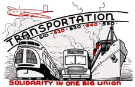

Workers of the Skies Unite! - The 2005 Northwest Airlines Strike
Submitted on Sat, 06/17/2006 - 2:10am
By Kdog - Twin Cities IWW GMB Friday, Jun 16 2006
In August 2005 the mechanics and cleaners at Northwest Airlines (NWA), the world’s fourth largest passenger airline went out on strike. The workers were rejecting the company’s final offer of massive concessions, including 53% job cuts, 26% wage reductions and sharp cuts to their benefits and pensions.
This battle is in response to a new round of attacks by the old large industrial corporations, such as the Airlines and Automakers against their heavily unionized and relatively better-off workers. Out-sourcing (reducing unionization), and sharp scaling back of pay, benefits, and pensions are the general thrust, part of their drive to make US workers more “competitive” with the rest of the world. The enormous power and prestige these brand name corporations have means these attacks set the tone and establish the trend for all class relations in the US. As the necessary norm for doing business in the global market.
Today’s unions for the most part accept the logic of the capitalist market and are completely out of practice of any kind of militant struggle. This poses the question how are workers going to be able to resist these attacks, and how are we as revolutionary anarchists and class partisans going to be able to best aid our sisters and brothers given our extremely limited size, resources, and influence? Let’s look at this strike and try and draw out some lessons so far.
AMFA
The mechanics, cleaners and custodians at NWA are represented by AMFA, the Airline Mechanics Fraternal Association, a sort of do-it-yourself craft union that for years barely existed at the margins of the industry. Up thru the nineties, the mechanics at Northwest were represented along with the baggage handlers and ticket agents by the International Association of Machinists (IAM). But sick of continuous concessionary contracts negotiated by the IAM, and confident in the leverage created by their skill-set the mechanics along with the cleaners and custodians struck out on their own becoming the first major work group from one of the big airlines to affiliate with AMFA.
Generally we should support industrial, not craft unionism. There were also some conservative reasons why the mechanics at NWA went to AMFA. But it should not be a surprise to us that in the absence of any clear class pole - like the IWW of old for instance - workers will try and find something, anything, that gives them some independence from the business as usual of the mainstream unions. In the same way that the P-9 meatpackers of Austin, MN in the ‘80’s grasped onto Ray Rogers’ “Corporate Campaign”, the mechanics at NWA grabbed onto AMFA.
AMFA its self is a bit of a trip. Headquartered not in Washington, New York, or Detroit but in a small town in New Hampshire. Run out of a law firm, and headed up by a crusty old airline mechanic called O.V. Delle-Femine, AMFA is not your typical U.S. union. While AMFA regrettably relies on lawyers for its negotiations, it has no real bureaucracy to speak of. It’s small number of officers are either still working or fresh from the shop floor.
Rather then being a layered hierarchy of useless and interfering bureaucrats, AMFA had if anything a problem going the other way. A kind of “Tyranny of Structurelessness”. There was little internal organization to the strike, meaning every problem, question, and opportunity was thrust to the new local president. There was never any effective democratic procedure for running the strike, like weekly mass meetings and/or an elected strike council of delegates to discuss and implement strategy. Folks were very much winging it.
But I never saw any bureaucratic interference or undemocratic methods used to silence or police the strikers. In fact it was amazing how little “cushion” separated the negotiators from the active core of the strike. One example: a few weeks into the strike, the AMFA negotiators were discussing bringing back a new, worse NWA offer to the membership to vote on. When some of the more active strikers herd about this they were livid and began personally calling the AMFA national leadership and negotiators on their cell phones and demanding that this not happen. At one point a pissed off steward started physically threatening the negotiating team, while others used less violent but still firm reasoning. The negotiators were forced to pull the idea. It is unthinkable to think of local rank & file activists and officers being able to effect national negotiations like that in the Teamsters, UAW, or IAM for instance.
AFL-CIO Treachery
AMFA is not affiliated to the AFL-CIO. Apparently still smarting from the workers exodus from the IAM, the federation did all it could to undermine AMFA during the strike. The AFL actually sent a letter to every metro labor council in the country ordering the unions to refuse any support to AMFA. This had a very chilling effect on solidarity efforts. In concrete terms it meant that even raising simple motions for a donation at your local union’s meeting would be opposed by most union officials. It meant that no wider mobilizations of official labor solidarity would be possible. It created a huge obstacle to reaching the constituency that would be most naturally supportive of AMFA’s struggle.
Of course this exile from the House of Labor, also gave a certain openness to the struggle that would not have existed otherwise. Many rank and file AMFA workers were not only acutely aware of the “corporate” enemy, but also had a pretty sophisticated understanding of the problems with the labor “movement”. With no AFL-CIO support there was not the usual bureaucratic control of the grassroots, the legalism, and electoralism. We found thru the IWW that we were able to easily (surprisingly easily) enter into pretty serious strategic discussions with Local 33’s officers and activist core, make proposals and plan some significant action.
Direct Action
NWA is headquartered in Minneapolis-St. Paul, and it’s largest hub is at the Twin Cities international airport. AMFA’s largest base, Local 33, is in the Twin Cities. From the beginning of the strike, Twin Cities anarchists have been in solidarity. During the first days of the strike, members of Northstar Anarchist Collective did three banner drops over one of the main interstates going out to the airport. Most of our activity has been as members of the newly formed Twin Cities IWW.
Our perspective, which we continually tried to hit home, at the solidarity committee meetings, at the unofficial action group meetings, and at rallies and the picket line was simple: “What will it take to win this strike?”
It seemed to us that the strike had to impede NWA’s ability to operate, it had to start hurting the company. It had to spread to the others sectors of workers at the airports, especially the Flight Attendants (The PFAA, an AMFA-like independent union that split from the Teamsters) and Baggage Handlers and Ticket Agents (IAM). It had to become an issue of concern and attention for working people generally. It had to create a crisis for the larger capitalist class beyond the NWA board and large stockholders.
Within the Solidarity Committee, an informal action group (made up of mechanics, revolutionary unionists, and a few other radical supporters), and among individuals there was no real disagreement with this view. But there were serious questions and concerns about whether and how this was possible. Our ideas about direct action meshed with some of the strikers though, and we were able to pull off some important actions.
Three significant direct actions were organized jointly by revolutionary unionists and an informal mechanics action group. The first action served as a kind of test. More then 50 workers (mostly AMFA members) picketed a hotel where scabs were being put up and moved on to hotel property feeling out the reaction of the scabs, security and police. To follow that up we announced to the media and the union’s membership that we were going to picket the homes of NWA CEO and Board members. Our group chartered three school buses but shortly before moving out from the launching area/Strike HQ announced to each full bus of 80 plus strikers and supporters that the buses were instead going to three of the hotels where NWA was putting up scabs, in order to blockade the buses NWA chartered for their PM shift. This idea was greeted enthusiastically and we were off. The ruse worked. Vance security and local police were waiting for us at CEO Chuck Steenland’s home. At each hotel serious confrontations developed with the scab buses, delaying their movement for a couple hours.
At one hotel location, a scab bus mysteriously developed a flat tire, making a perfect backdrop for an impromptu press conference featuring Local 33 officers and activist flight attendants and baggage handlers who were supporting AMFA. Shortly before police announced they would make mass arrests we retreated as planned.
The shift had been delayed and NWA was confronted with a security hole it hadn’t planned for. Direct Action was on the agenda as the way forward, and dozens of workers had played a part in planning and carrying out the most audacious labor action in the Twin Cities in years. The press would have to adjust from its comfortable story line of the union’s defeat. And in an end around the AFL-CIO’s stonewall, trade unionists and their supporters would see the strike’s energy and action on TV and the front page… Except this was also the day after Hurricane Katrina hit and the reality of that situation would wipe nearly everything else out of public discussion and consciousness.
A couple weeks later, following a rally at the Strike Headquarters the same group of us organized and motivated for a car caravan to drive over to the main gate at the airport where the scabs were brought in. Over 200 cars ended up participating - totally jamming up the service road that the scab buses would use. A couple of our cars ended up having “engine trouble” causing the police to make two arrests and tow out two vehicles. Again a shift was delayed, NWA was caught unprepared tactically, and spirits soared.
(In separate anonymous actions, there were reports of metal spike caltrops being spread on that same service road to the airport utilized for transporting scabs, and of a couple scabs being beat up at the hotels they were being put up in by the Corporation.)
There was however no easy consensus on the next step forward. AMFA had been overconfident in their ability to shut down the airline simply by withdrawing their labor. NWA had seen that coming though, and many believe actually wanted the confrontation. While almost no AMFA folks crossed in the first couple months, the company kept the planes flying by hiring and training scabs and using management around the clock. The FAA and the local “liberal” media conspired to suppress the gross safety violations and a couple of near misses that resulted.
We were not able to find a way to create momentum towards more action, involving broader groups of airline workers and others. There was lots of discussions of what it would take to actually shut down the airport for a day - the kind of action that would create a huge amount of attention for the strike and pressure on the other unions to support it - but no plan emerged that seemed realistic.
As the strike dragged on - now entering it’s 6th month - more AMFA workers, including many of the strike’s active core that we had worked with, started peeling away to go find work elsewhere, move out of state, or just plain move on. Despite the dismal scene, AMFA workers in December voted to reject yet another, worse final offer from NWA. There will be no face-saving way out here. Heads held high, the NWA mechanics and cleaners have had to absorb a major blow. The company now must absorb bankruptcy, the other unions the shame of having stood by and watched. We, who supported and fought alongside the striking workers, need to absorb the lessons.
Some Lessons for Anarchists
1. There clearly is an offensive by the bosses aimed at what have been the best working-class jobs. (See Delphi, GM, Ford, Delta, Northwest . . .) The aim is to force US workers to compete with workers internationally on a much lower playing field.
2. These attacks will generate resistance. Since the mainstream unions are not oriented toward militant struggle, the workers, will by necessity have to seek additional and/or other vehicles to organize struggle.
3. The traditional anarchist and syndicalist methods of direct action and horizontal organization, as well as agitation for expanded Mass Strikes or even General Strikes will be immediately useful to the workers in this situation. Proposals for these tactics may find a much more receptive audience than we are used to. Many workers will be quite skillful at organizing and implementing these tactics. We will have as much to learn as to teach.
4. These type of actions have the potential to escalate and will be met by repression. We have a responsibility to help prepare for the consequences, and plan for the next steps. Individual direct actions can be reduced to “stunts”, if not part of a broader strategy. Police brutality, arrests, and corporate lawsuits against the union can have a chilling effect if folks aren’t prepared.
5. Despite the potential radicalization among these sectors, it is not automatic that it will go wholly in a libertarian direction. Indeed there is a wide opening for authoritarian and even fascist politics among this sector (made up largely of the formerly best paid and mostly white and male workers). Anti-immigration, economic protectionism and general U.S. nationalism will have to be countered in creative and practical ways.
6. There is a need for an organized pole of consistent revolutionary anarchist / syndicalist ideas and action that can relate to and help develop this resistance. I think comrades in the WSA, NEFAC, NWAF, exFRAC, ARA and individual anarchist militants need to discuss whether the IWW or some other common front is needed to serve as such a pole.
From the forthcoming issue of WORKERS SOLIDARITY, publication of the
anarchosyndicalist Workers Solidarity Alliance (WSA) 339 Lafayette Street #202, NY NY 10012. mailto:wsany@hotmail.com